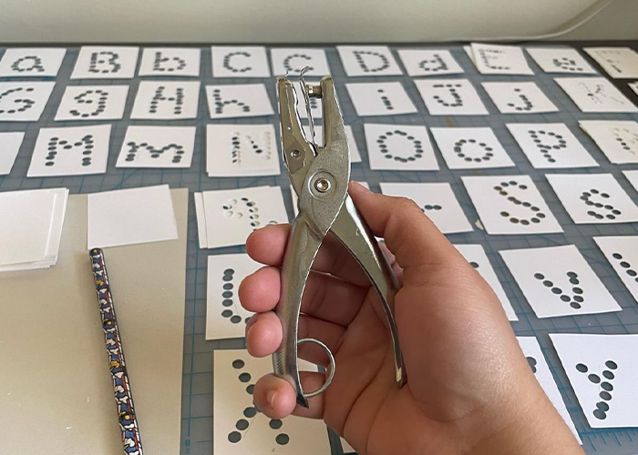

Punchy Sans Typeface
Punchy Sans is a custom made typeface that comes in 2 styles to match the specimen sheet. This typeface is part of a larger group investigation into ecography.
CADC Excellence Award, 2023




Punchy Sans is a custom made typeface that comes in 2 styles to match the specimen sheet. This typeface is part of a larger group investigation into ecography.
CADC Excellence Award, 2023